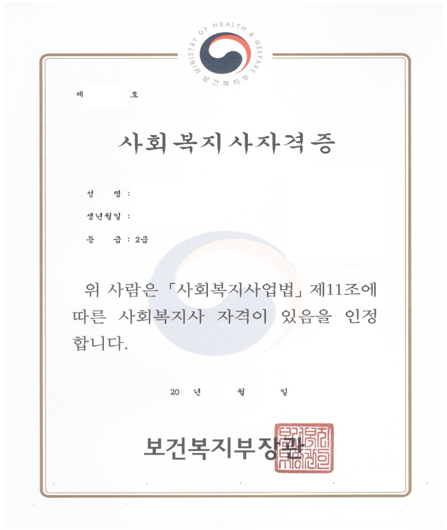

사회복지사 2급
자격증 발급 방법
증명서 발급
자격증 발급은 제출서류 구비 후 학습자가 직접 신청하셔야합니다.
자세한 내용은 『한국사회복지사협회 자격관리센터』에서 확인하시기 바랍니다.
제출 서류
| 신규 및 승급 신청인 구비 서류 | |
|---|---|
| 공통구비서류 |
1. 사회복지사 자격증 발급 신청서 1부 (온라인 작성 후 출력한 출력물) 2. 6개월 이내에 모자 등을 쓰지 않고 촬영한 천연색 상반신 정면사진 (3.5cmX 4.5cm) 3장 3. (외국인에 한함) 외국인등록사실확인서 또는 재외국민국내거소신고증 원본 1부 4. (외국인에 한함) 결격사유조회 서류를 우리말로 번역 공증한 서류 원본 1부 근거법령 : 사회복지사업법 제11조의 2 (사회복지사의 결격사유) |
| 학점은행제 이수자 |
1. 최종학력 증명서 (또는 국가평생교육진흥원 학위 증명서) 2. 국가평생교육진흥원성적증명서 3. 사회복지현장실습확인서 (원본) 4. 추가서류 ( 해당자만 제출) ① 사회복지현장실습 교과목의 수업기간 확인필요자 (국가평생교육진흥원 성적증명서에 사회복지현장실습 교과목의 이수년월이 2020. 02를 포함하여 그 이후인 자 중 보건복지부장관 선정된 기관실습 실시기관에서 기관실습을 하지 않은 자) → 제출서류 : 사회복지현장실습 교과목의 수업이 2019년 12월 31일 이전에 시작된 사항을 증빙하는 교육기관의 발급서류 ② 개정되기 전 법령에 따른 선택교과목 4과목 이상 이수 대상 확인 필요자 (국가평생교육진흥원 성적증명서에 사회복지전공교과목 및 사회복지 관련교과목의 이수년월이 모두 2020. 02 이후인 자 중 개정되기 전 법령에 따른 선택교과목 4과목 이상 이수 대상) → 제출서류 : 사회복지학 전공교과목과 사회복지학 관련교과목 일부 또는 전부의 수업일이 2019년 12월 31일 이전에 시작된 사항을 증빙하는 교육기관의 발급서류 |
※ 공통 및 별도 구비서류 모두, 발급일 기준
90일 이내의 원본 서류만 심사 가능합니다.
단, 사회복지현장실습 확인서는 90일 이후 서류도 심사 가능합니다. (반드시 원본이어야 합니다.)
신청방법
한국사회복지협회 자격관리센터 홈페이지 접속 메인 화면에 온라인 자격증 신청하러 가기 클릭
사회복지사자격증 → 자격증 신청 제출 서류 등 안내 → 자격증신청서 온라인 입력
온라인 자격 신청 (공통구비서류 ①번)
성적 증명서 (학점은행이수자 서류 ②번)
그 외 서류
| 구분 | 내용 |
|---|---|
| 최종학력증명서 | 대학 또는 국가평생교육진흥원 학위 증명서 |
| 실습 확인서 | 사회복지현장실습확인서 (원본) |
| 기타 | ▶ 6개월 이내에 모자 등을 쓰지 않고 촬영한 천연색 상반신 정면사진 (3.5cmX 4.5cm) 3장 → 1장은 자격증 발급신청서에 부착, 나머지 2장은 뒷면에 성명, 주민번호 앞자리(6자리) 기재후 서류와 함께 동봉하여 제출 ▶ 추가서류 ( 해당자만 제출) 사회복지현장실습 교과목의 수업기간 확인 필요자 → 사회복지현장실습 교과목의 수업이 2019년 12월 31일 이전에 시작되었으나 국가평생교육진흥원 성적 증명서의 이수 년월이 2020년으로 확인 된 경우, 해당 교육기관의 성적 증명서 또는 수강증명서 제출 |
접수처 확인
한국사회복지협회 자격관리센터 홈페이지 접속 메인 화면에 자격증 신청방법 클릭 → 사회복지사 자격증 접수처 보기 클릭
사회복지사 자격증 접수처 확인 후 자격증 신청
- 사회복지사 자격증 발급 수수료 : 1만원
- 협회 회원증 발급 수수료 : 1만원
- 연회비 : 5만원
※ 자격증발급 신청구비서류는 서류 제출하고자 하는 지방협회로 등기 발송
발급 수수료 및 회비는 서류 제출한 지방협회로 계좌입금
▶ 발급 수수료 및 회원증, 연회비의 문의건의 경우 협회 소관으로 사회복지협회로 문의 바랍니다.
자격증

사회복지사 2급 자격증 취득을 축하드립니다. 그동안 고생하셨습니다